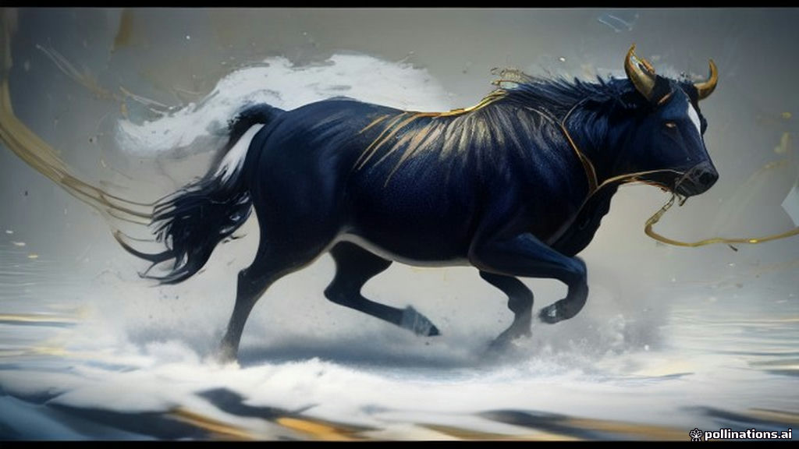

Market Wrap — 18 November 2026
TL;DR
- Indian equity benchmarks saw a decline today, primarily driven by weak global cues and profit booking.
- The biggest factor influencing the market was a cautious global sentiment, leading to a broad-based decline.
- Specific standout gainers and losers from the Nifty 500 were not available in today's data.
- Foreign Institutional Investors (FIIs) remained net buyers, infusing ₹4,195 crore, while Domestic Institutional Investors (DIIs) also turned net buyers with ₹197 crore.
- F&O positioning data for today's session is unavailable and will populate from the next wrap.
- The overall market breadth was extremely narrow, with no reported advances or declines for individual stocks.
How the market behaved today
Indian equity benchmarks registered a decline today, with the Nifty falling 0.63% and the Sensex declining 0.61%, as investors engaged in profit booking amid weak global cues. The session saw a broad-based cautious sentiment prevailing across the market.
| Index | Close | Change | High | Low |
|---|---|---|---|---|
| Nifty 50 | data unavailable | -0.63% | data unavailable | data unavailable |
| Bank Nifty | data unavailable | data unavailable | data unavailable | data unavailable |
| Nifty Midcap 100 | data unavailable | data unavailable | data unavailable | data unavailable |
| Nifty Smallcap 100 | data unavailable | data unavailable | data unavailable | data unavailable |
India VIX: data unavailable. Volatility data for the day was unavailable, making it difficult to gauge the market's fear gauge.
What moved the market — the factors
The Indian market's decline today was primarily attributed to weak global cues and a wave of profit booking. Despite positive net buying from both Foreign Institutional Investors (FIIs) and Domestic Institutional Investors (DIIs), the broader sentiment remained subdued. FIIs continued their buying spree with ₹4,195 crore, and DIIs turned net buyers with ₹197 crore, breaking a streak of net selling. However, this positive flow was outweighed by the cautious global environment.
Globally, while the Nasdaq saw gains due to Nvidia's positive outlook lifting AI sentiment, the Dow Jones Industrial Average and S&P 500 experienced declines, contributing to the overall weak cues. Overnight, crude oil prices (Brent and WTI) saw significant declines, along with gold and silver, while the Dollar Index strengthened. These mixed global signals, coupled with investors opting to book profits, steered the Indian benchmarks lower.
Specific sector or heavy-weight stock movements that drove the index decline were not available in the provided data.
Sectors — winners and losers
Top 3 gainer sectors: data unavailable Top 3 loser sectors: data unavailable
Stocks that moved the market
Top 5 gainers (Nifty 500)
data unavailable
Top 5 losers (Nifty 500)
data unavailable
News that moved stocks
Here's a look at some of the key news items that influenced market sentiment and specific stocks today:
Public Sector Banks Report Strong H1 FY27 Profits Public sector banks in India reported a robust 16.9% increase in net profits during the first half of this fiscal year, reaching ₹1.10 lakh crore. Their total business crossed ₹300 lakh crore, reflecting a healthy financial environment for the banking sector. This news is broadly positive for PSU bank stocks.
Dalmia Bharat to Consider Share Buyback Dalmia Bharat, India's fourth-largest cement manufacturer, announced that its board will convene on November 23 to discuss a proposal for a buyback of fully paid-up equity shares. Share buybacks are often seen as a positive signal by investors, indicating management's confidence in the company's valuation and a commitment to returning capital to shareholders. This could generate interest in Dalmia Bharat shares.
Real Estate Sector Sees Significant Activity The real estate sector witnessed a flurry of activity today:
- Puravankara Limited launched Purva Cityspire in Kochi, an ambitious new project with a gross development value (GDV) of ₹2,000 crore, indicating strong expansion plans.
- Prestige Estates Projects Ltd acquired a 50% stake in Advent Convention and Hotels International for an estimated ₹500 crore, aiming to develop a commercial project.
- IndoSpace launched Narasapura-II, an industrial and logistics park in Karnataka spanning 1.05 million square feet, with an investment of ₹350 crore.
- Assetz Ltd received SEBI approval for its initial public offering (IPO), aiming to raise around ₹1,200 crore.
These developments collectively highlight strong growth and investment momentum within the real estate and logistics infrastructure sectors.
Gateway Distriparks to Manage JNPA Rail Yard Terminal Gateway Distriparks Limited secured a mandate to operate and manage the common rail yard terminal at Jawaharlal Nehru Port Authority (JNPA). This move is expected to enhance the handling of container trains and improve efficiency, which is a positive development for the company and the logistics sector.
Global AI Buzz and Nasdaq's Extended Trading Hours Globally, the AI sector continued to generate excitement, with Nasdaq gaining ground as Nvidia's positive revenue guidance lifted market sentiment. Furthermore, Anthropic, the maker of the Claude chatbot, is preparing for an IPO that could potentially raise $90.4 billion, making it one of the largest stock market debuts ever. In another significant development, Nasdaq is set to roll out 23-hour-a-day trading, expanding access to US equities for global investors. These global developments, particularly in technology and AI, could influence investor sentiment towards related Indian sectors.
F&O build-up — where traders are positioning
OI build-up needs the previous session's OI — it will populate from the next run.
Market breadth
Today's market breadth was exceptionally narrow, with 0 advances and 0 declines out of 0 total stocks reported. This indicates a very quiet session in terms of individual stock movement, despite the benchmark indices registering a decline.
FII / DII flows
Foreign Institutional Investors (FIIs) continued their positive stance in the Indian markets today, while Domestic Institutional Investors (DIIs) also turned net buyers after a period of selling.
| Investor Type | Net Flow (₹ crore) |
|---|---|
| FII | +4,195 |
| DII | +197 |
Looking at the 5-day history, FIIs have been consistent net buyers, bringing in significant capital into the Indian markets. DIIs, on the other hand, had been net sellers for the past four sessions but have now turned net buyers today. This shift in DII sentiment, alongside sustained FII buying, suggests underlying support for the market, even though benchmarks declined today due to other factors.
Event breakdown — what happened today and how it hit the market
Today's session was primarily driven by a combination of weak global cues and profit booking, rather than a single defining event. While there was positive news from the Public Sector Banks reporting strong half-yearly profits and significant activity in the real estate and logistics sectors with new project launches and acquisitions, these positive developments were not enough to counter the broader cautious sentiment. The market's decline suggests that investors prioritized global uncertainties and opted to lock in gains.
Setup for tomorrow
Looking ahead to tomorrow, global cues will continue to be a significant factor. Overnight, the US markets presented a mixed picture, with Nasdaq gaining on AI optimism but the Dow and S&P 500 declining. The Dollar Index strengthened, while crude oil, gold, and silver prices fell. The US 10-year yield also saw a slight dip. These mixed signals suggest a cautious start for Asian markets, including India. Investors will be watching for further developments on the global economic front and any fresh triggers. Sectors like banking (following strong PSB results) and real estate (given the flurry of news) might see continued interest.
Sources
- Market Trading Guide: Deepak Fertilisers among 3 stock recommendations for Thursday.
- Dalmia Bharat to consider share buyback at Nov 23 board meeting.
- Target reports strongest quarterly sales gain in five years heading into the holiday shopping season.
- Nasdaq gains in choppy trade as Nvidia outlook lifts AI mood; Anthropic pricing awaited.
- PSBs' net profit rises 17% to Rs 1.10 lakh cr in H1 FY27; business crosses Rs 300 lakh crore.
- Puravankara launches Purva Cityspire in Kochi with ₹2,000 crore GDV.
- Prestige Group buys 50 pc stake in Advent Convention and Hotels International for Rs 500 cr.
- Gateway Distriparks to operate, manage common rail yard terminal at JNPA.
- IndoSpace launches 1.05M sq ft Narasapura-II industrial and logistics park in Karnataka.
- Real estate firm Assetz gets Sebi nod to float Rs 1,200-cr IPO.
- Wall Street Sees More Mega Debt Deals Using Paramount Blueprint.
- Anthropic IPO set to raise $90.4 billion, could become biggest stock market debut ever.
- Anthropic’s IPO by the Numbers: Taking on SpaceX’s Record Debut.
- US Stock Market: Nasdaq preparing to roll out 23-hour-a-day trading from this date – Key facts for investors.
- After 156% surge in a day, this American firm stock rises another 5%. What's driving the biotech share rally?.